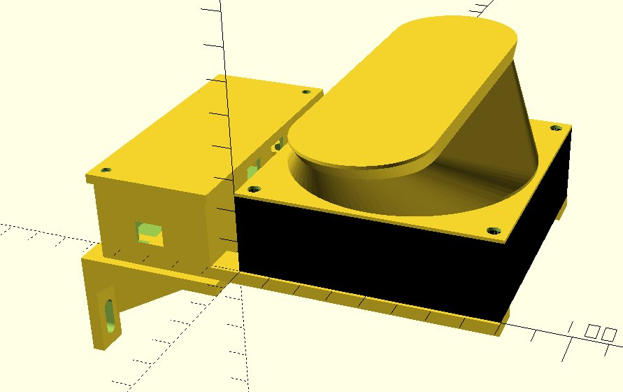
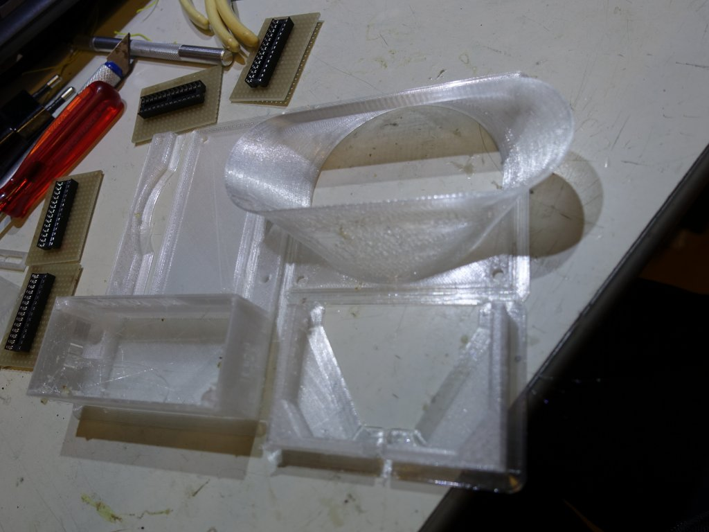

In voor bereiding van het gebruik van een warmtepomp heb ik voor de badkamer en de kinder kamers de radiator geoptimalizeerd met een
ventilator om een geforceerde lucht stroom te creeren. Eigenlijk zouden de radiatoren vervangen moeten worden met lage temperatuur
varianten voor het toepassen van een warmtepomp. Dit is een poging om de vervanging te voorkomen. Er is een kant en klaar product waarmee
je dit kan doen namelijk de speed comfort.
Speed comfort
Op zich een prima product maar als je die onder de radiator met zijn magneten in klikt dan ontstaat er een geluids trillings overgang
waardoor de radiator als een klank kast gaat werken waardoor je de ventilator sterk gaat horen. Dus ben ik zelf wat gaan bouwen. Hoofd
idee gebruik standaard verkrijgbare ventilatoren en monteer die aan de muur vast en niet aan de radiator zodat er geen geluids overdracht
kan plaats vinden. Hier is een rendering van het design:

Het ontwerp is gebaseerd voor toepassing van smalle (5cm tussen ruimte) radiatoren zoals ik die in huis heb. Voor de modernere
breede varianten kan het design ook gebruikt worden maar valt de ventialor al bijna geheel tussen de platen. Ik heb 8cm ventilatoren toegepast niet te klein want die maken snel teveel herrie en niet te groot om te kunnen gebruiken. Een ventialor krijgt een microcontroller
die besluit of de ventilator moet draaien of niet en de rest van de ventilatoren kan parallel aangesloten worden. Typisch heb ik 4 ventilatoren per radiator nodig maar dat ligt niet vast. Nu nog het vinden van een stille 8cm ventilator. Dat was niet eenvoudig. Ik heb
3 varianten aangeschaft om te testen hoe die zich gedragen namelijk:
Sunon 9.6cm €4.25
Arctic 8cm €3.66
Noiseblocker 8cm €12.96
Noctua 8cm €11.13
Mijn persoonlijke ervaring is dat de Sunon echt wel geluid maakt en dus ongeschikt is. De Noctua heeft nog wat motor geluid en heeft een zeer lasige aan/uit karakteristiek (laat zich slecht met pwm regelen). Blijft over de Noiseblocker en de Arctic. Beiden lopen soepel bij volle 12V is de Arctic iets hoorbaarder maar op deellast is de Noiseblocker zijn motor iets meer te horen. De afwerking van de behuizing van de Noiseblocker is zeer goed en geluid dempend. Maar omdat ik direct op de muur monteer heb ik toch voor de stille Arctic gekozen want het prijs verschil is best groot.
